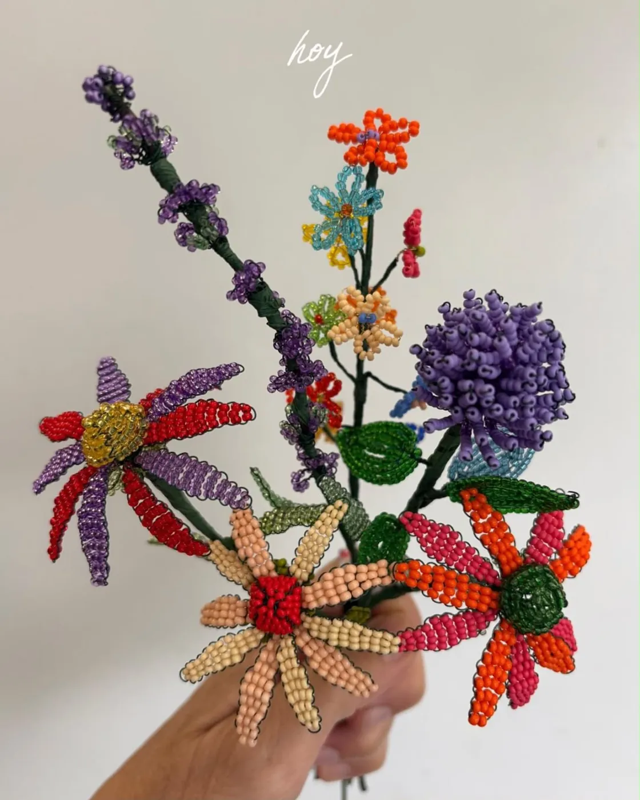
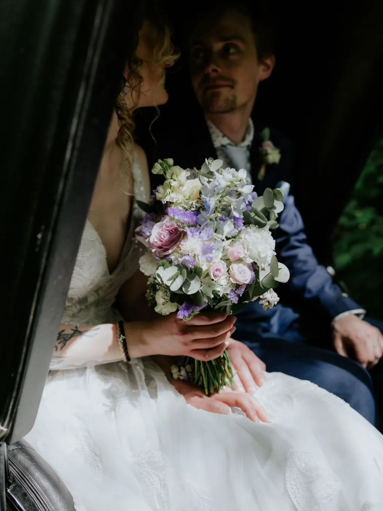
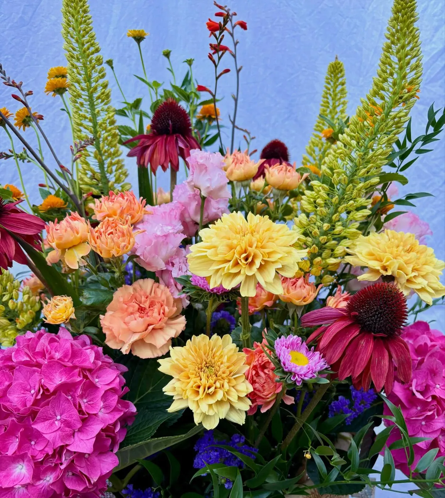

Huwelijken & events
Van bruidsboeket en corsages tot bloemen op tafel en boven de ceremonie.
Op maat van jullie dag
Ik ben Kaat. In mijn atelier in Leuven maak ik bruidsboeketten en feestbloemen, geef ik workshops en vullen in de zomer kinderen de tafels met bloemen van papier, pareltjes en echte stelen.
Verse bloemen, droogbloemen, zijde, papier of pareltjes. Bij Hoy draait alles rond bloemen, en liefst met een flinke dosis kleur.
Van bruidsboeket en corsages tot bloemen op tafel en boven de ceremonie.
Op maat van jullie dag
Samen een boeket, krans of bloemenbroche maken. Ook als vrijgezellen of teambuilding.
In groep of met twee
Een week lang elke dag bloemen. Knippen, kleuren, plooien en mee naar huis nemen.
In de zomer
Bloemen die blijven staan. Los, in een abonnement of als geveldecoratie.
Altijd in bloei

De liefde werd deze zomer veelvuldig gevierd, en ik mocht er bijna twintig keer bij zijn.
We beginnen met een gesprek over jullie stijl, de locatie en wat jullie zeker wel of niet willen. Knalkleuren of net zacht en romantisch: ik vertaal het naar bloemen die bij jullie passen.
Je kiest uit een tafel vol kleuren en ik help je op weg. Ook als je nog nooit een bloem geschikt hebt. Je gaat naar huis met iets wat je zelf maakte, en meestal ook met een hoofd vol rust.



Geen feest nodig om bloemen in huis te halen. Bestel een vers boeket of droogbloemen, geef een cadeaubon of laat elke maand bloemen brengen met een abonnement. Afhalen in het atelier of laten leveren.
“Wat een prachtige bloemen!” Deze uitspraak werd door zowat al onze gasten gedaan. Kaat verzorgde de bloemen op ons huwelijk en we hadden geen betere keuze kunnen maken. Persoonlijke begeleiding en een resultaat waar je mond van openviel.
Kaat is echt een aanrader! Ze heeft de bloemen voor onze trouw in Leuven verzorgd en we waren ontzettend blij met het resultaat. We hadden gekozen voor een kleurrijke, vrolijke stijl en Kaat heeft dit prachtig vertaald naar de bloemen.
Vandaag een workshop gevolgd bij Hoy By Kaat als onderdeel van een vrijgezellenfeest. Het was een heel leuke ervaring. Kaat heeft alles zo goed uitgelegd en er was heel veel keus aan mooie, kwaliteitsvolle bloemen.
Het atelier is enkel open op afspraak. Stuur me een berichtje met je datum of je idee, dan spreken we af om samen te kijken wat kan.
Ik maakte deze demo voor jullie om te tonen wat er kan. Na een kort gesprek maak ik er iets veel persoonlijkers van, helemaal naar jullie wens.
Vrijblijvend. Ik kom langs of we bellen.
Op maat, op jullie eigen domein.
Geen voorschot. Jullie betalen pas als alles klaar is.
Hosting, domeinnaam en kleine wijzigingen, zoals nieuwe openingsuren.
Omdat een voorbeeld meer zegt dan een mail. Zo zien jullie meteen wat er kan, en het kost jullie niets.
Nee. Het gesprek is vrijblijvend. Vinden jullie het niks, dan is het daarmee gedaan.
Na ons gesprek staat jullie site binnen 10 tot 14 dagen online.
Zeker. Jullie domeinnaam kan gewoon blijven, de nieuwe site komt in de plaats van de oude.
Nee, dat doe ik op basis van ons gesprek. Eigen foto's zijn mooi meegenomen, maar niet nodig om te starten.